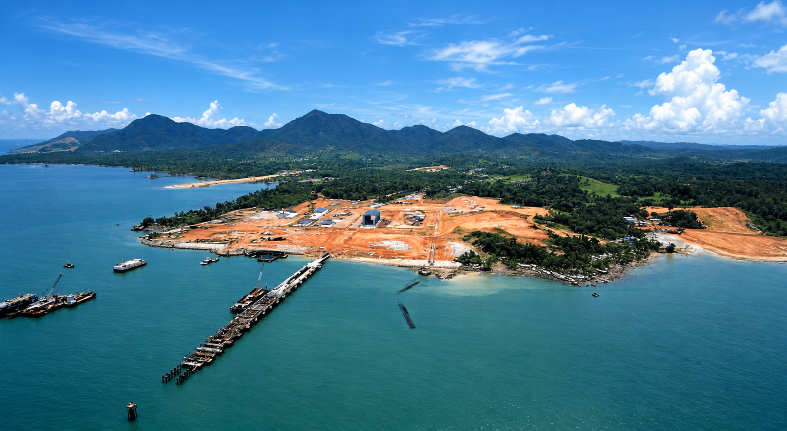

LAND AVAILABLE FOR PARTNERSHIP
1,000 Hectares of Coastal Opportunity
With 1,000 hectares of land available for investment partnerships and lease arrangements, this coastal setting offers room for marine and industrial development against the backdrop of Gunung Jantan and Gunung Betina. The estate plan identifies groundwater catchment and water production well areas, giving investors a basis for exploring long-term water supply options. Groundwater quality and sustainable yield remain subject to site-specific assessment.
View coastal panorama ↗